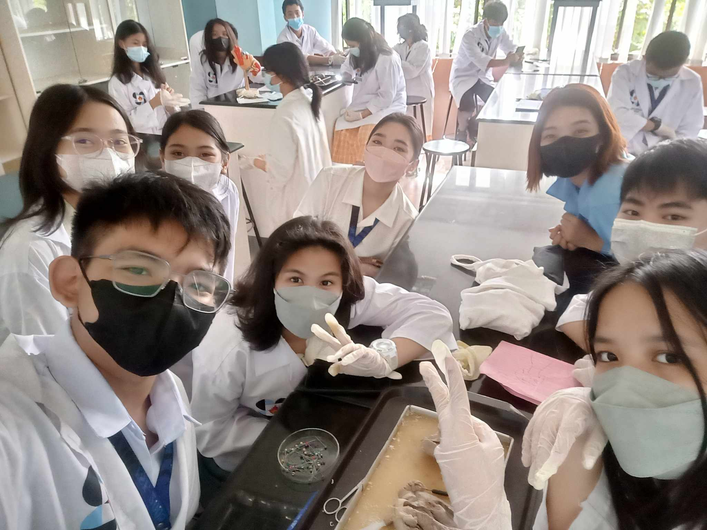

WHY DO WE NEED A BIOLOGY LAB AT AVERDIEN?
A biology lab at Averdien Montessori School is crucial for several reasons, aligning with the
school's commitment to providing a comprehensive and hands-on educational experience. Firstly,
a biology lab serves as a practical extension of the classroom, allowing students to apply theoretical
knowledge in a real-world setting. Through hands-on experiments and activities, students can deepen
their understanding of biological concepts, fostering a more profound appreciation for the subject.
Furthermore, a biology lab promotes the development of essential scientific skills, such as observation,
experimentation, and data analysis. Students learn to use scientific instruments, conduct experiments,
and draw conclusions based on empirical evidence. These skills are not only integral to understanding
biology but also transferable to various scientific disciplines, cultivating a foundation for future
academic and professional endeavors.
And here is the latest experimental report from our labs here at Averdien. Students were tasked to
simulate different parts and scopes of the digestive system to see more on their findings click down below